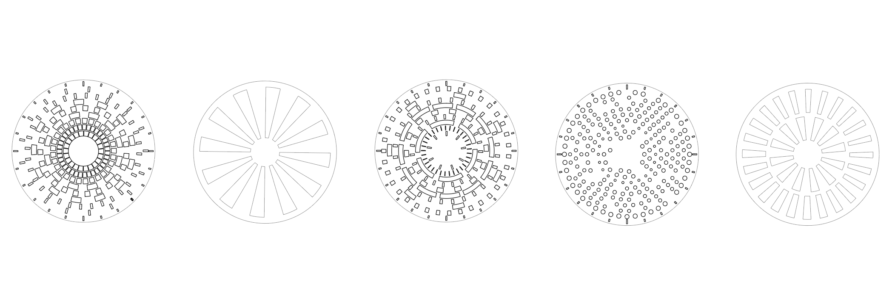
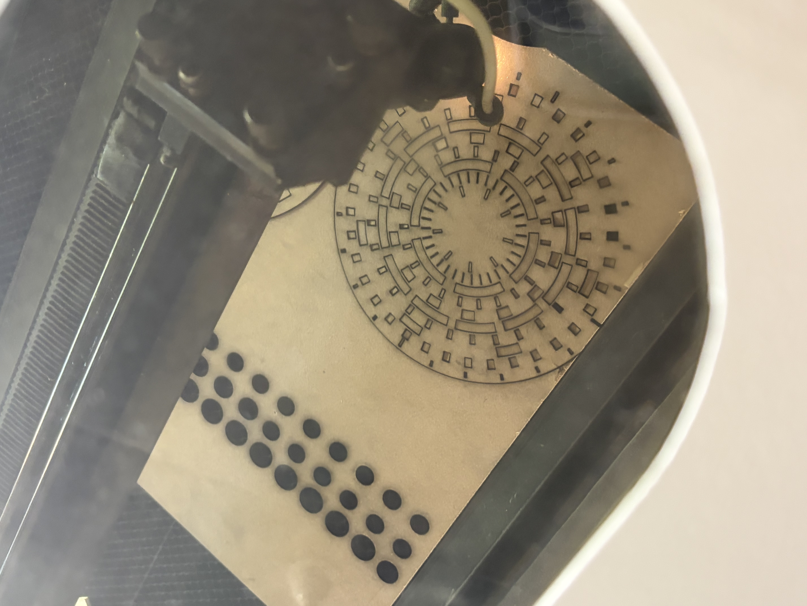
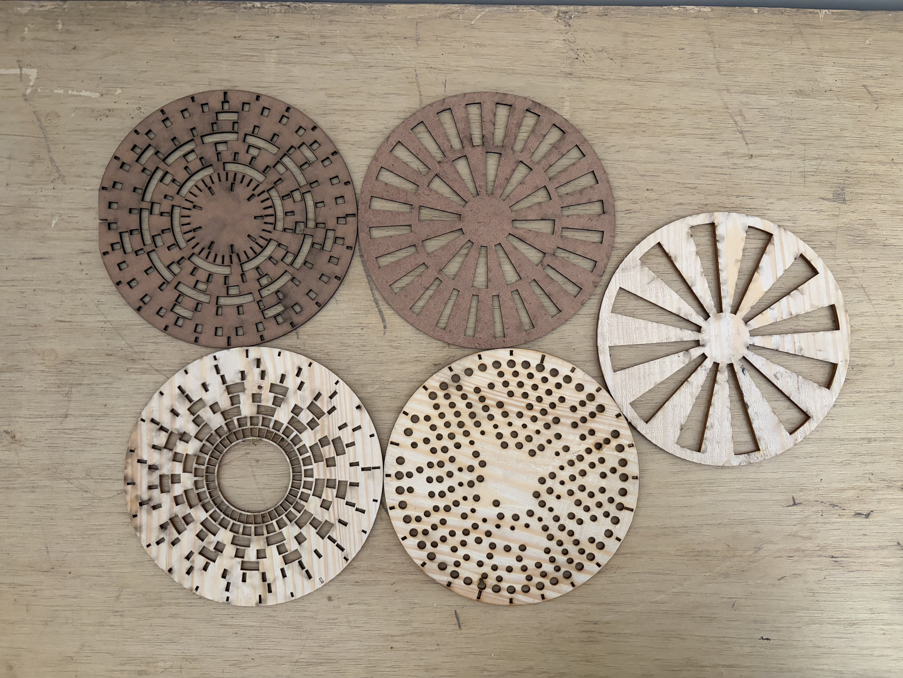
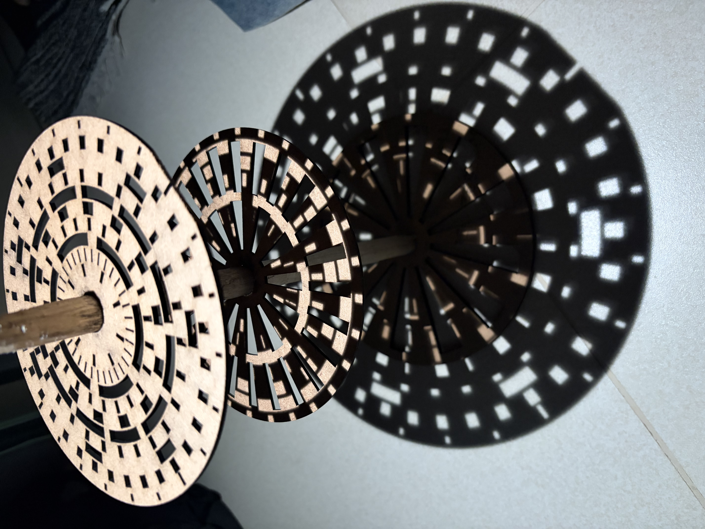
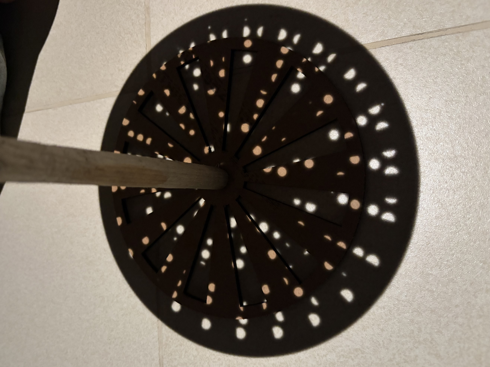

Ideation
Since we had to work towards creating something physical or tangible, I wanted to exhibit physically what the word "generative" means.
While the concept of generative art is often associated with digital outcomes, my approach was to create a physical manifestation that embodies the principles of generative art through mechanical movement and interaction.
I aimed to do this using principles of randomness and constraints to create unique and unpredictable patterns with each spin. This was explored through the medium of light and shadow, as this also allows for the creation of dynamic and ever-changing visual experiences that are dependent on scale and can be magnified.
Conceptual framework
The three ideas holding the project together. Select a tab to read each one.
Each layer's pattern is generated in p5.js from a random seed, using one of three pattern types. Every pattern is unique and each set is different.
Every layer is built around a common centre, ensuring that the patterns align and create a cohesive visual effect when spun.
Light passes through the stacked layers and casts a shadow onto a surface. Moving the layers closer together or further apart changes how their shadows overlap, and rotating them together or one at a time changes which holes line up, so the projection keeps changing.
The Pattern Generator
A p5.js sketch generates the disc patterns, shows the three layers as solid discs with the pattern cut out as holes, and exports an SVG for the laser cutter. It is the same code, running here.
Each press of New set rolls three different pattern types in a random order. Space and S also work while your pointer is over the sketch. In the exported file, every red hairline is a cut.
Process
Open each step to see what happened.
Generate the first patterns in p5.js
Generating patterns and finding a suitable set that would convey the intended visual effect easily.

Export the SVG and laser cut the MDF
Exporting the generated patterns as an SVG file and laser cutting them from MDF of different thicknesses to change the speed with which they rotate.

Create Set-Up using Wood
Working at the Wood workshop to make wooden dowels and base to hold the discs.
Assemble the layers and test the light
Assembling the layers and testing the light to ensure proper functionality.
Final outcome
The finished piece, shown spinning and as a shadow projection.



Learnings
- Distance changes the image as much as the pattern does.Moving a layer closer to or further from the light changes how big its shadow is, so the gap between layers is a design variable.
- Physical prototypes behave differently from previews. The on-screen preview is only a guide. Material, it's thickness, weight and strength can affect the final result. So it's important to keep this in mind while choosing materials and medium.
- Randomness within constraints. Even a randomly generated pattern only looked good within the constraints of the design and rules about the pattern.
Reflection
Through this assignment, I was even more drawn to create art that carries principles of science and nature that one can interpret in many ways. The final piece is a set of laser-cut MDF layers whose spacing can be changed and which can be turned separately or together, with a light shining through them to cast a projection on a wall or a screen. While this deals a lot with shadow and light, I would also like to interpret it as how scale can be magnified — how even a tiny source of light and a small object can expand vastly and occupy surfaces ; surfaces they weren’t necessarily made for. The shadows bend and take the form of the surface, seemingly versatile yet leaving a mark.
In my project, rule based generation is executed twice, first by the code and then by the physical artefact.